L'assemblea condominiale è sovrana, ma non onnipotente
L'assemblea condominiale decide a maggioranza, ma il suo potere ha confini precisi. Quando li supera, la delibera diventa impugnabile e il giudice può intervenire. Recenti orientam…

Dimissioni dall'apprendistato: quando scatta la penale risarcitoria
Lasciare un contratto di apprendistato prima del termine non è sempre privo di conseguenze economiche. Se il contratto contiene una clausola penale collegata alla formazione ricevu…

Concorso pubblico e selezione della dirigenza: cosa cambierebbe con il ddl sulla PA
Un disegno di legge sulla pubblica amministrazione torna a discutere il reclutamento della dirigenza, ipotizzando un peso maggiore delle valutazioni interne rispetto al concorso. I…

Bonus assunzione under 35: come funziona e a quali condizioni
È in discussione alla Camera una misura che introdurrebbe un esonero contributivo per l'assunzione a tempo indeterminato di giovani under 35. Il testo non è definitivo e va verific…

Pagamenti in ritardo e revocatoria: quando il curatore può colpire
Un fornitore incassa con ritardo rispetto al contratto, l'impresa cliente fallisce e il curatore chiede la restituzione delle somme. È un rischio concreto. La giurisprudenza di leg…
Transizione ecologica e Terzo settore: cosa cambia per gli ETS
A Verona prende il via l'appuntamento di Cantieri ViceVersa dedicato ad ambiente ed energia, promosso dal Forum Terzo Settore e dal Forum per la Finanza Sostenibile. Il tema, oltre…

Finanza sociale e sostenibilità: cosa cambia per gli ETS
Il 25 e 26 giugno 2026 Verona ospita la Summer School di Cantieri ViceVersa, promossa dal Forum Terzo Settore con il Forum per la Finanza Sostenibile. Tema centrale: finanza social…

Concorsi pubblici e punteggio extra ai neolaureati: i limiti tra ricambio generazionale e divieto di discriminazione per età
Premiare chi ha conseguito la laurea da poco con un punteggio maggiorato è un criterio sempre più presente nei bandi pubblici. L'obiettivo dichiarato è il ricambio generazionale. M…
Imposta sostitutiva 5% su premi di produttività e aumenti da rinnovo contrattuale
Una circolare dell'Agenzia delle Entrate avrebbe ampliato il perimetro dell'imposta sostitutiva al 5% applicabile ai premi di produttività e ad alcune voci legate ai rinnovi contra…
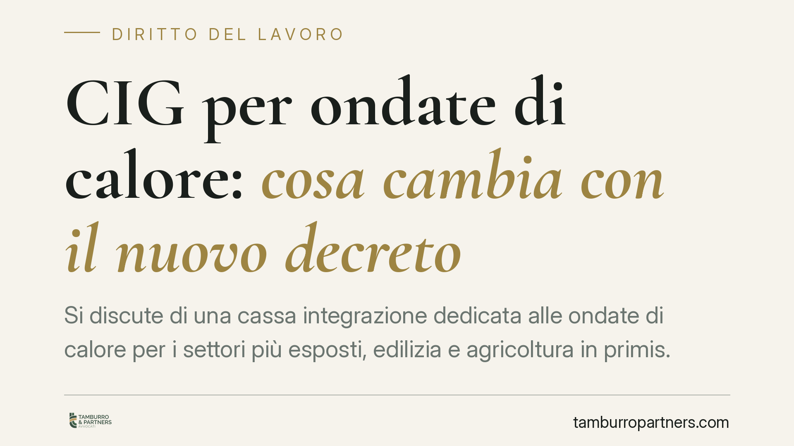
CIG per ondate di calore: cosa cambia con il nuovo decreto
Si discute di una cassa integrazione dedicata alle ondate di calore per i settori più esposti, edilizia e agricoltura in primis. L'intento è tutelare chi lavora sotto il sole, ma i…
Piscina nel giardino privato: quando il condominio non può bloccarla
Due recenti pronunce di merito ribadiscono un principio importante per chi possiede un giardino in condominio: l'assemblea non può opporsi alla realizzazione di una piscina in prop…
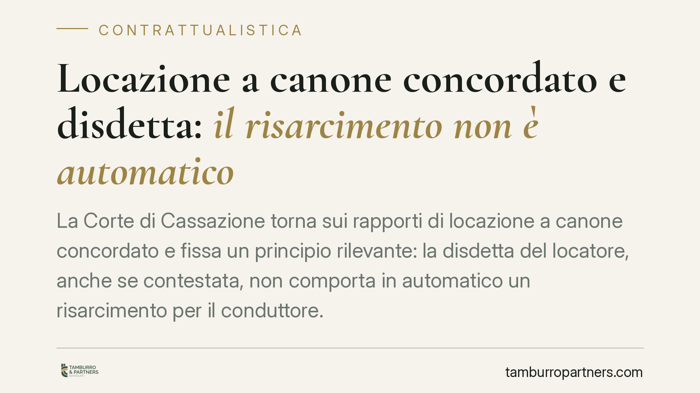
Locazione a canone concordato e disdetta: il risarcimento non è automatico
La Corte di Cassazione torna sui rapporti di locazione a canone concordato e fissa un principio rilevante: la disdetta del locatore, anche se contestata, non comporta in automatico…
Appalti pubblici: il CCNL meno tutelante non si compensa con il superminimo
Il Consiglio di Stato chiarisce che, negli appalti pubblici, l'applicazione di un CCNL meno tutelante non può essere sanata con un superminimo concesso unilateralmente dall'impresa…
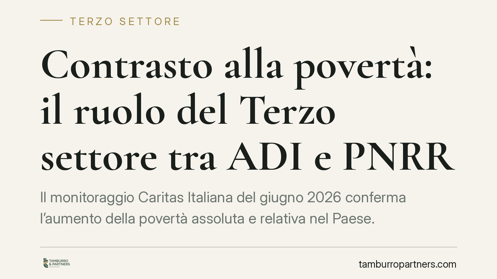
Contrasto alla povertà: il ruolo del Terzo settore tra ADI e PNRR
Il monitoraggio Caritas Italiana del giugno 2026 conferma l'aumento della povertà assoluta e relativa nel Paese. Il dato rilancia il dibattito sugli strumenti di contrasto: l'Asseg…
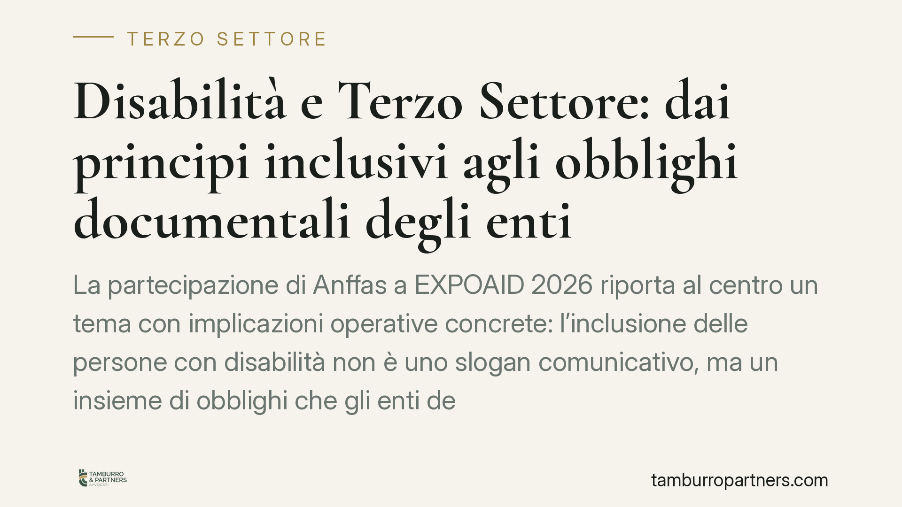
Disabilità e Terzo Settore: dai principi inclusivi agli obblighi documentali degli enti
La partecipazione di Anffas a EXPOAID 2026 riporta al centro un tema con implicazioni operative concrete: l'inclusione delle persone con disabilità non è uno slogan comunicativo, m…
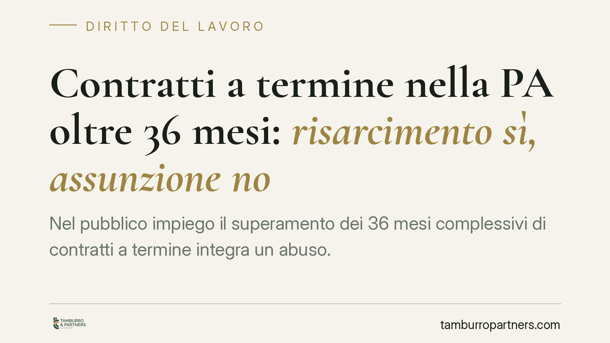
Contratti a termine nella PA oltre 36 mesi: risarcimento sì, assunzione no
Nel pubblico impiego il superamento dei 36 mesi complessivi di contratti a termine integra un abuso. La conseguenza, però, non è la stabilizzazione automatica: la legge esclude la …
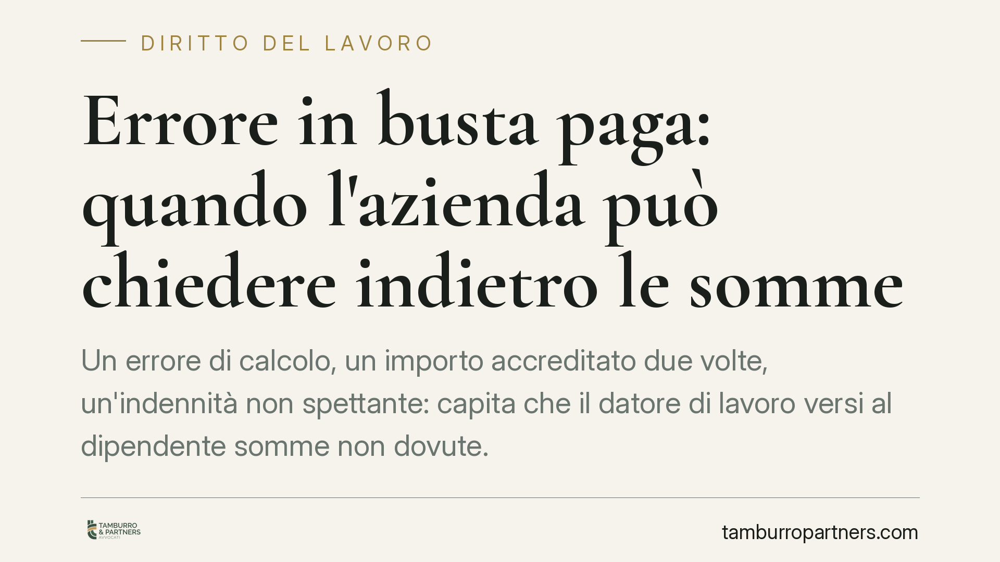
Errore in busta paga: quando l'azienda può chiedere indietro le somme
Un errore di calcolo, un importo accreditato due volte, un'indennità non spettante: capita che il datore di lavoro versi al dipendente somme non dovute. Può poi chiederle indietro?…
Opzione donna esclusa per chi ha già diritto alla pensione anticipata
La Corte di Cassazione torna sull'Opzione donna e fissa un punto netto: il regime non spetta a chi possiede già i requisiti per la pensione anticipata ordinaria. Una lettura che re…
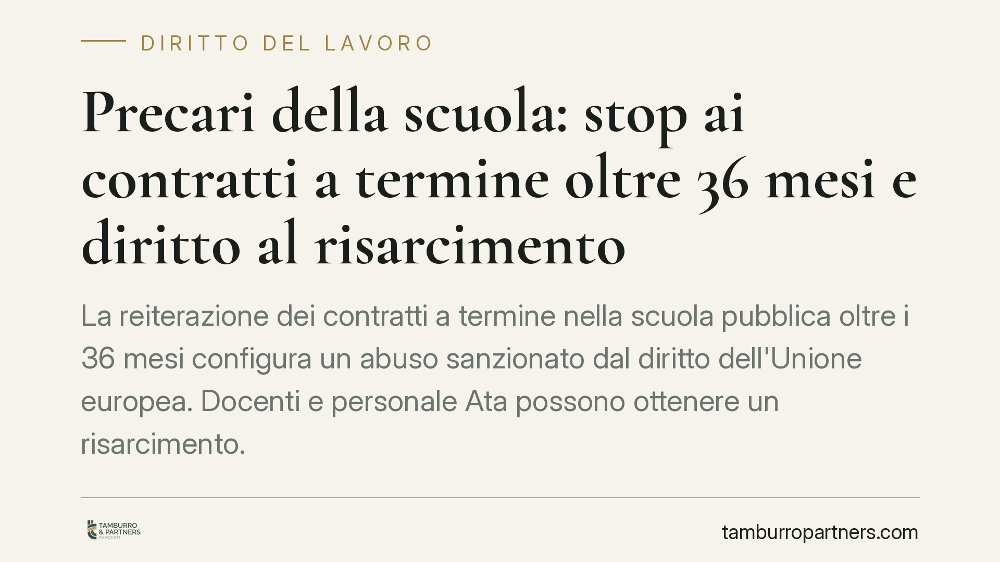
Precari della scuola e abuso del contratto a termine: il diritto al risarcimento oltre i 36 mesi
L'uso reiterato di contratti a termine nella scuola pubblica oltre i 36 mesi configura un abuso secondo il diritto dell'Unione e la giurisprudenza italiana. Docenti e personale ATA…
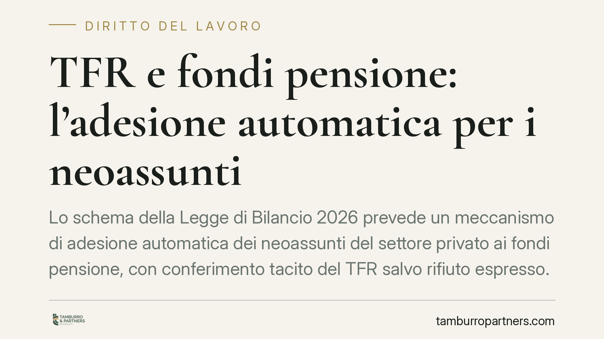
TFR e fondi pensione: l'adesione automatica per i neoassunti
Lo schema della Legge di Bilancio 2026 prevede un meccanismo di adesione automatica dei neoassunti del settore privato ai fondi pensione, con conferimento tacito del TFR salvo rifi…
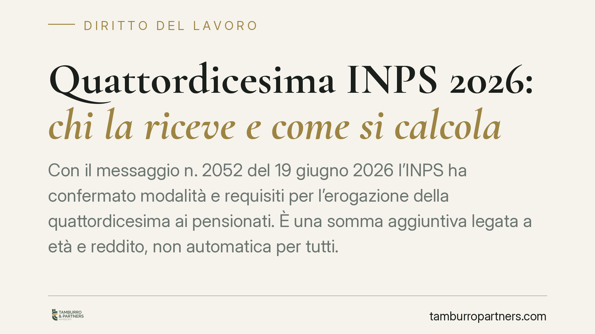
Quattordicesima INPS 2026: chi la riceve e come si calcola
Con il messaggio n. 2052 del 19 giugno 2026 l'INPS ha confermato modalità e requisiti per l'erogazione della quattordicesima ai pensionati. È una somma aggiuntiva legata a età e re…
Retribuzione durante le ferie: deve corrispondere allo stipendio ordinario
La retribuzione spettante durante le ferie deve corrispondere a quella percepita nei periodi di lavoro effettivo. Lo ribadisce il Tribunale di Salerno con la sentenza n. 2142 del 2…
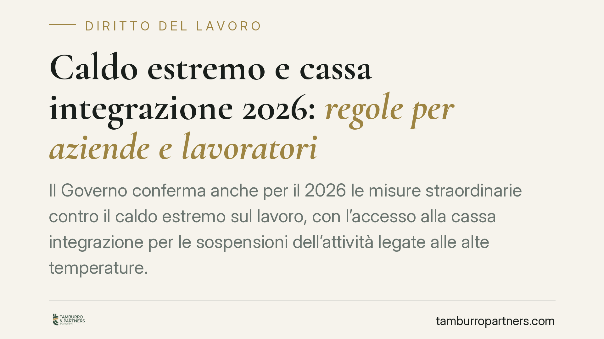
Caldo estremo 2026: la cassa integrazione torna per le aziende esposte al rischio termico
Anche per il 2026 il Governo conferma le misure straordinarie contro l'impatto del caldo estremo sul lavoro. Al centro c'è l'accesso agevolato alla cassa integrazione quando le tem…
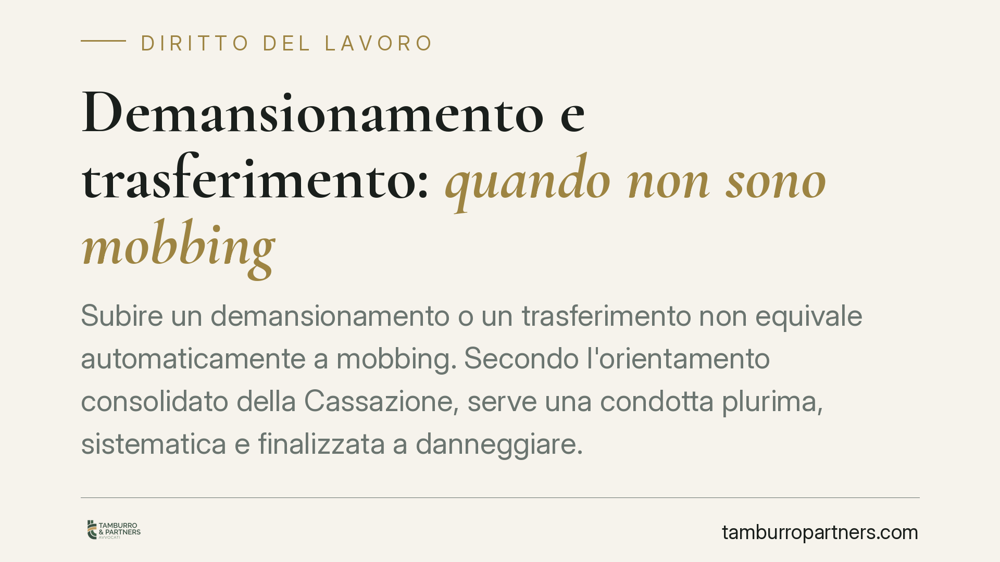
Demansionamento e trasferimento: quando non sono mobbing
Subire un demansionamento o un trasferimento non equivale automaticamente a mobbing. Secondo l'orientamento consolidato della Cassazione, serve una condotta plurima, sistematica e …
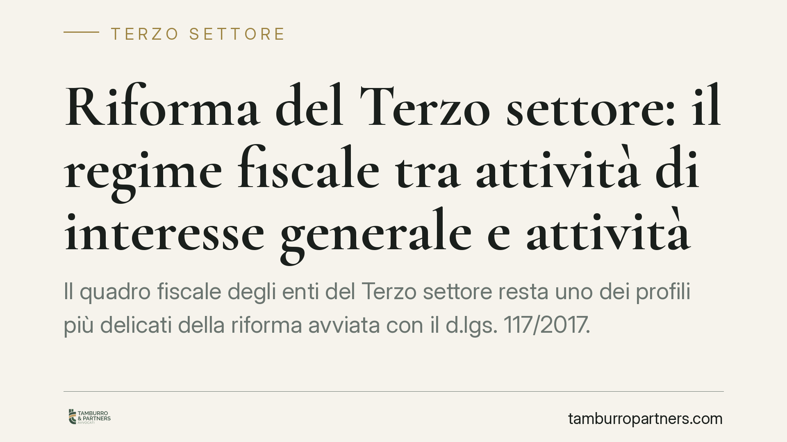
Riforma del Terzo settore: il regime fiscale tra attività di interesse generale e attività diverse
Il quadro fiscale degli enti del Terzo settore resta uno dei profili più delicati della riforma avviata con il d.lgs. 117/2017. Iniziative di formazione promosse dall'Amministrazio…
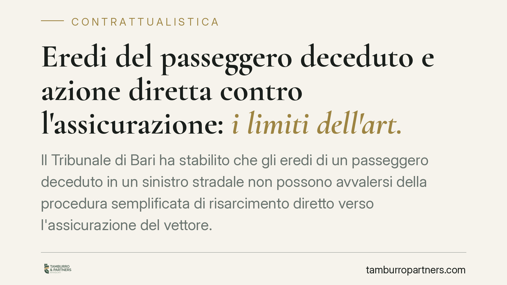
Eredi del passeggero deceduto e azione diretta contro l'assicurazione: i limiti dell'art. 141
Il Tribunale di Bari ha stabilito che gli eredi di un passeggero deceduto in un sinistro stradale non possono avvalersi della procedura semplificata di risarcimento diretto verso l…
Licenziamento e intelligenza artificiale: cosa ha stabilito il Tribunale di Roma
Il Tribunale di Roma ha riconosciuto come legittimo il licenziamento di una grafica sostituita da strumenti di intelligenza artificiale, ma solo entro confini precisi. La decisione…
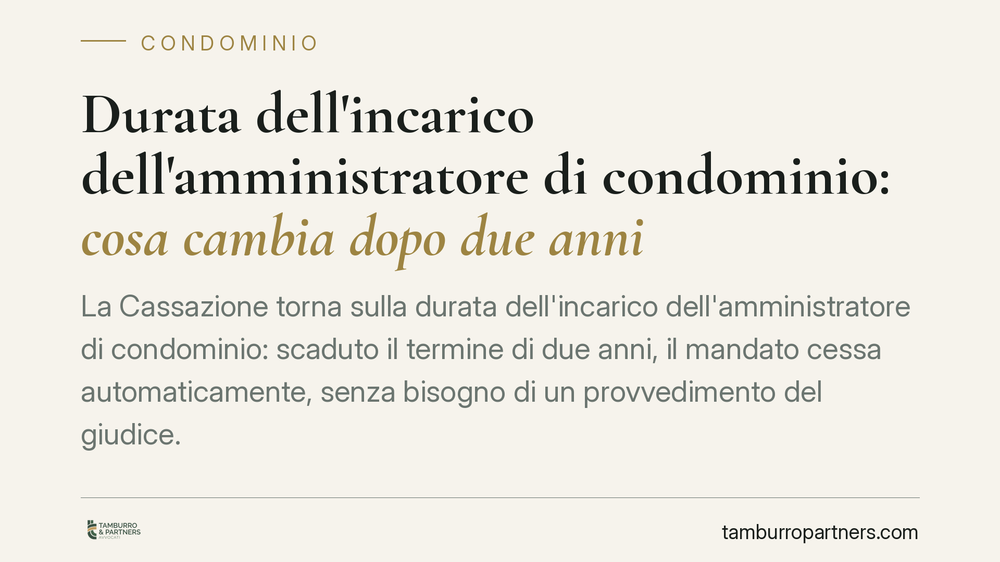
Durata dell'incarico dell'amministratore di condominio: cosa cambia dopo due anni
La Cassazione torna sulla durata dell'incarico dell'amministratore di condominio: scaduto il termine di due anni, il mandato cessa automaticamente, senza bisogno di un provvediment…
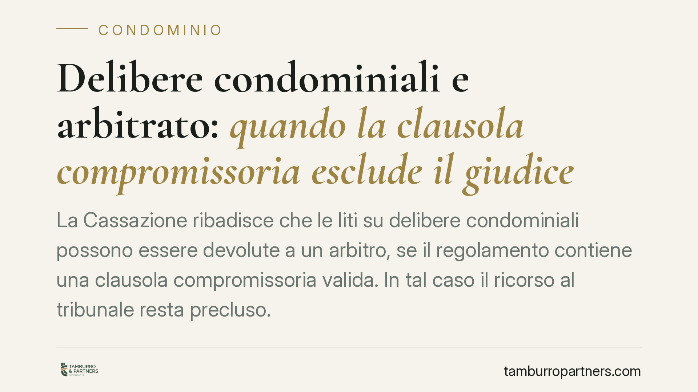
Delibere condominiali e arbitrato: quando la clausola compromissoria esclude il giudice
La Cassazione ribadisce che le liti su delibere condominiali possono essere devolute a un arbitro, se il regolamento contiene una clausola compromissoria valida. In tal caso il ric…
Part-time: il datore può cambiare l'orario senza il tuo consenso?
Nel lavoro a tempo parziale la collocazione e la durata dell'orario sono elementi essenziali del contratto. Il datore non può spostarli a piacimento: serve un accordo scritto o una…